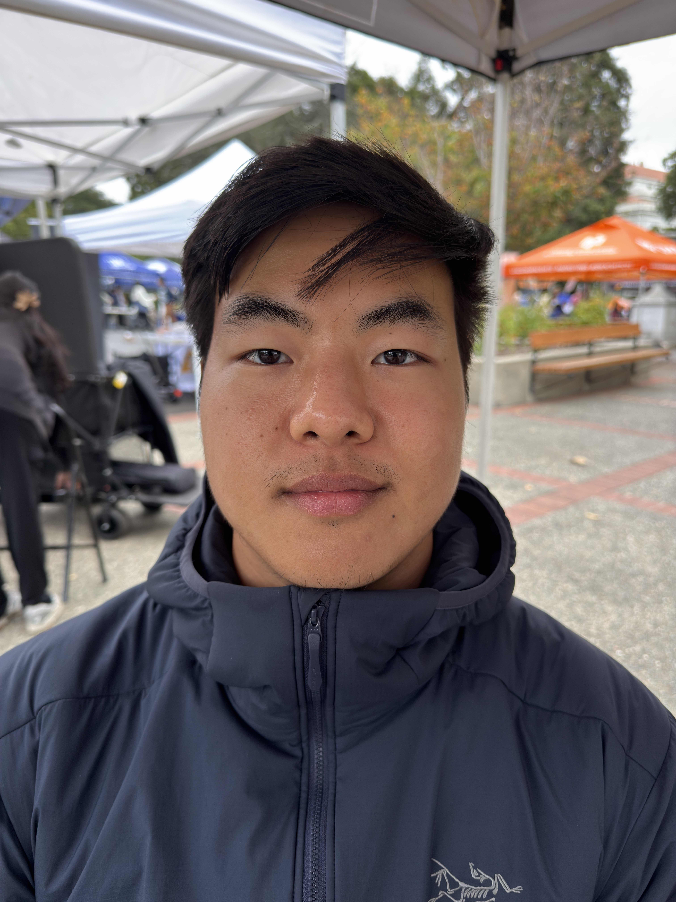
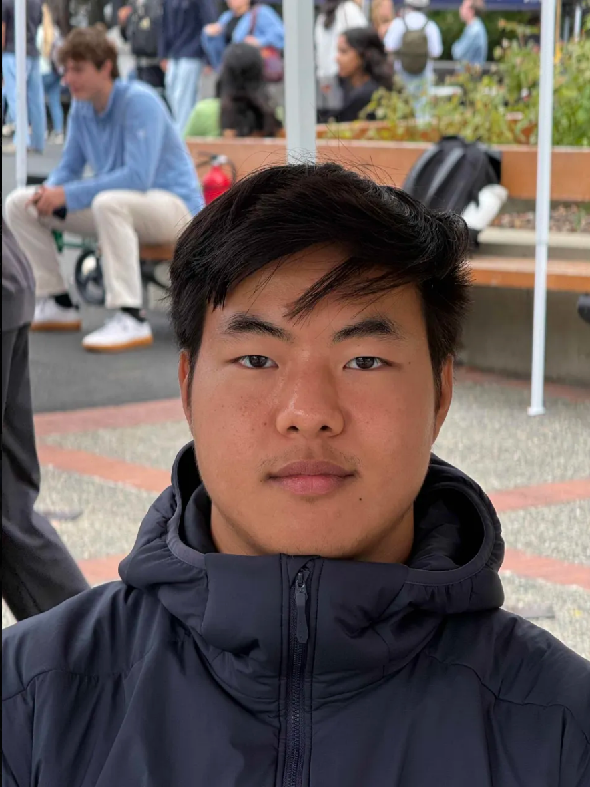
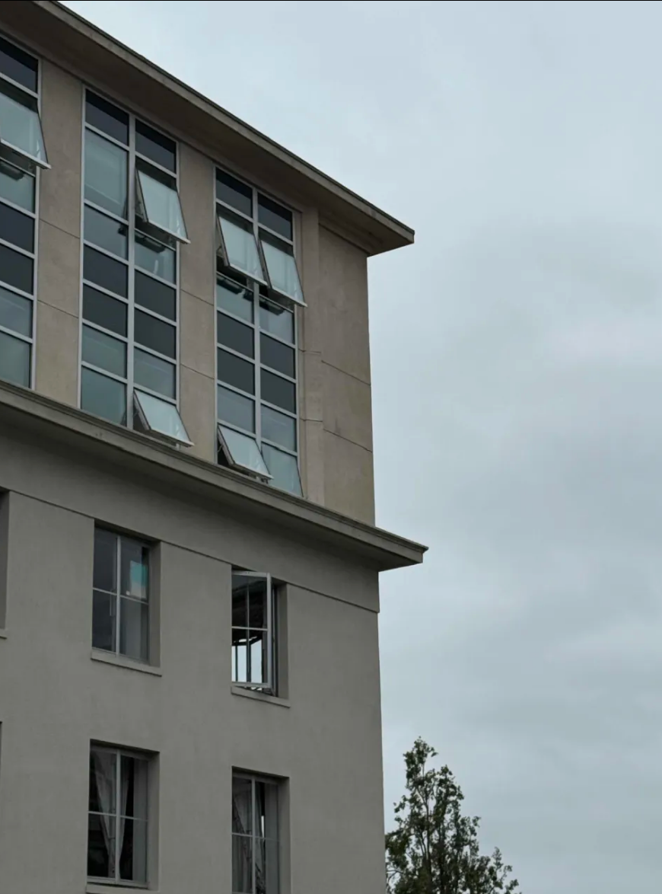
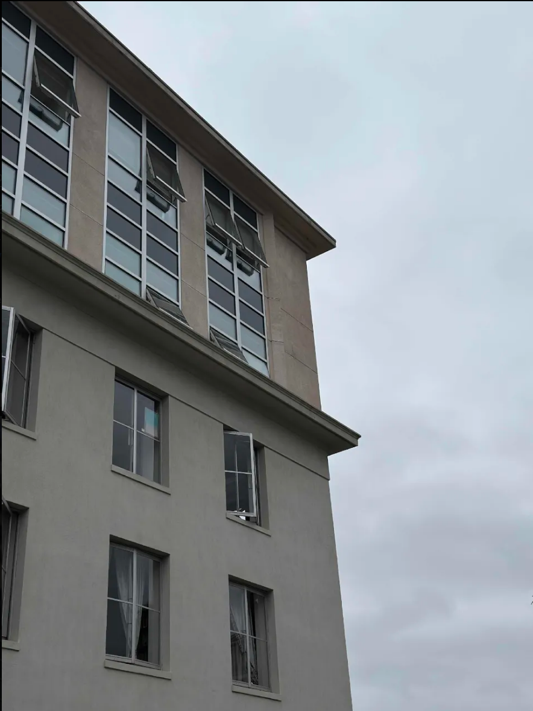
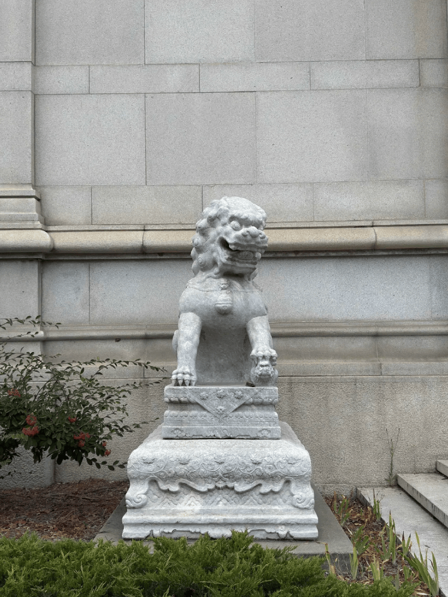

The close up selfie makes the face of the subject more distorted because when the camera is close to the subject, the wide lens of the phone exaggerates and stretches out parts of the face, making it look odd. With the zoom and standing farther from the subject, the stretch is less pronounced since it is closer to what we see through our eyes normally.


The pictures taken from far away feels more flat and compressed. When the photos are taken from a closer angle, it exaggerates the difference between the building and the background, giving it more depth.


The dolly zoom was created using 6 photos of the same lion statue. Through this gif, you can see how the compression of the image's subject changes, making it seem like the subject of the gif is getting more focused since the background seems to move away from the subject and because more contrasted.
